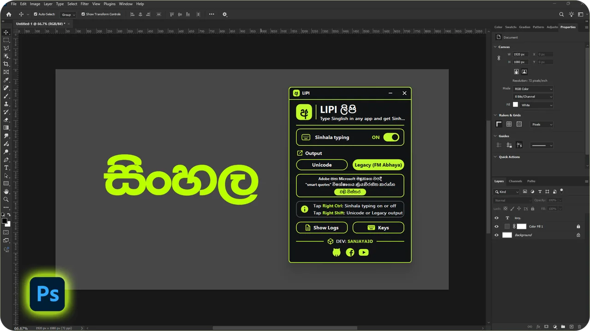
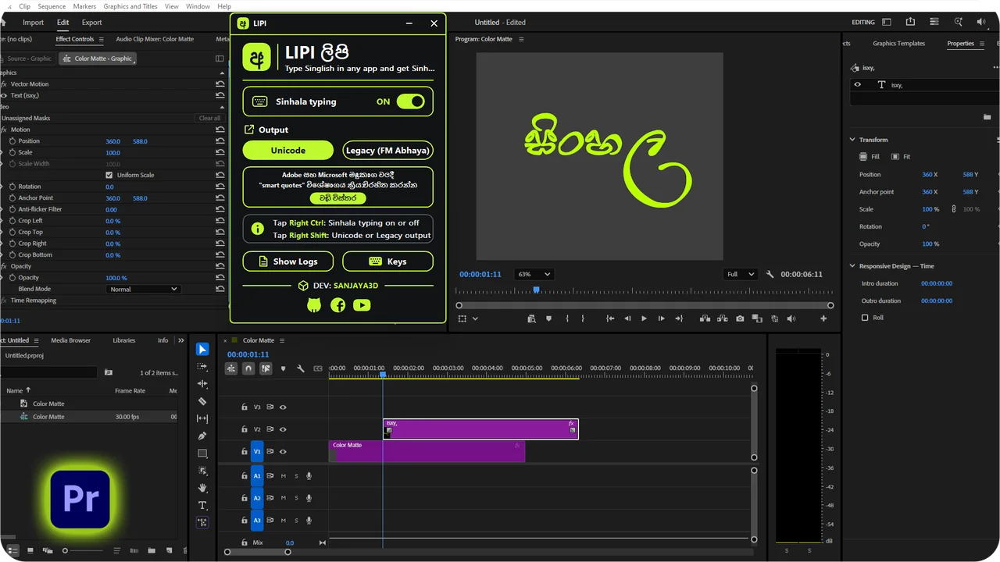
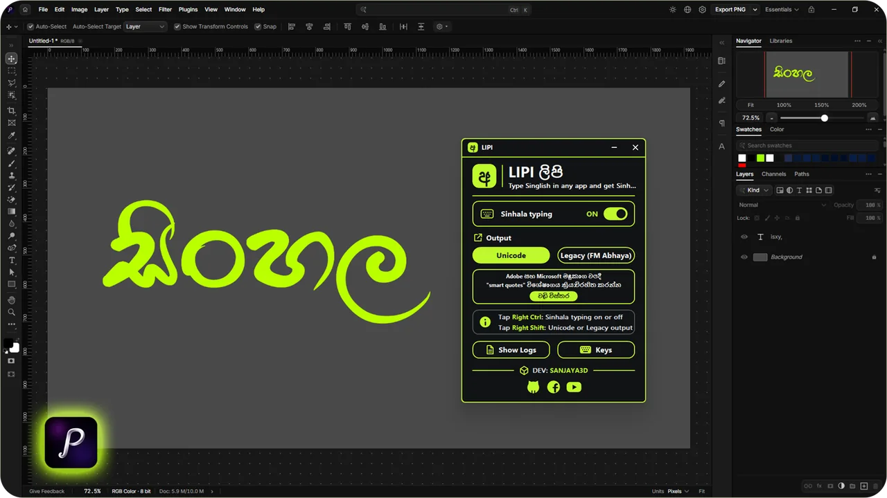
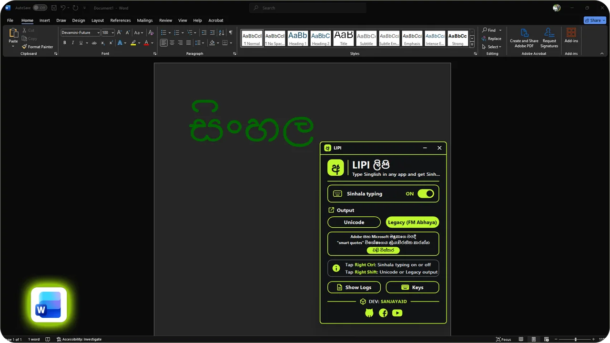

Type Singlish.
Get Sinhala. Live. Singlish ටයිප් කරන්න.
සිංහල ලබාගන්න. ඒ මොහොතේම.
Get Sinhala. Live.
සිංහල ලබාගන්න. ඒ මොහොතේම.


Meet the creator
Made by SANJAYA3D
The developer behind LIPI.
SANJAYA3D
Software developer and 3D artistIndependent developer, 3D animator and toolmaker from Sri Lanka. He builds small, fast tools for creative work, such as LIPI, and Blender add-ons such as Mat-Baker.
3D animationBlender add-onsRust and Windows tools
Experience6+Years in 3D and software development
Projects130+Projects completed
Mat-Baker2.3k+Blender add-on downloads
Open sourceLIPIWritten in Rust, free for everyone
Small, fast and private කුඩායි. වේගවත්. පෞද්ගලිකයි.
Works in any app ඕනෑම මෘදුකාංගයක වැඩ කරයි
Unicode or FM Abhaya Unicode හෝ FM Abhaya
Live typing සජීවී ටයිප් කිරීම
Tiny and private කුඩායි, පෞද්ගලිකයි
Lives in the tray Tray එකේ රැඳී සිටී
Key hints built in යතුරු උපදෙස් ඇතුළත්ව ඇත
lipi --keys prints the same chart.lipi --keys මඟින් එම වගුවම මුද්රණය කරයි.
Ready in a minute විනාඩියකින් සූදානම්
Download බාගත කරන්න Get lipi.exeand run it. The window opens. If Windows shows a blue warning, see the FAQ and Is the download safe?lipi.exeබාගත කර run කරන්න. Window එක විවෘත වේ. Windows විසින් නිල් පැහැති අනතුරු ඇඟවීමක් පෙන්වුවහොත්, නිතර අසන ප්රශ්න සහ බාගත කිරීම ආරක්ෂිතද? බලන්න.Switch typing on ටයිප් කිරීම On කරන්න Tap Right Ctrl to switch Sinhala typing on or off. Sinhala typing on හෝ off කිරීමට Right Ctrl යතුර එබන්න. Pick the output ප්රතිදානය තෝරන්න Tap Right Shift to switch between Unicode and legacy (FM Abhaya) output. Unicode සහ legacy (FM Abhaya) ප්රතිදාන අතර මාරු වීමට Right Shift යතුර එබන්න. Type ටයිප් කරන්න Type in any app. For example aayuboovangives ආයුබෝවන්.ඕනෑම මෘදුකාංගයක ටයිප් කරන්න. උදාහරණයක් ලෙස aayuboovanටයිප් කළ විට ආයුබෝවන් ලැබේ.
Type Sinhala where you work ඔබ වැඩ කරන තැන සිංහල ටයිප් කරන්න




A few simple rules සරල නීති කිහිපයක්
Keys are case-sensitive: tagives ට andTagives ඨ,nagives න andNagives ණ.ඉංග්රීසි ලොකු අකුරු සහ කුඩා අකුරු වෙනස් ලෙස සලකයි: taමඟින් ට ද,Taමඟින් ඨ ද,naමඟින් න ද,Naමඟින් ණ ද ලැබේ.A consonant on its own gets a hal: kgives ක්, andkagives ක.තනි ව්යංජනයකට හල් ලකුණ ලැබේ: kමඟින් ක් ද,kaමඟින් ක ද ලැබේ.Two consonants in a row join up. yandrafter another consonant make yansaya and rakaransaya:kyagives ක්ය andkragives ක්ර.ව්යංජන දෙකක් පිළිවෙළට ටයිප් කළ විට ඒවා එකට සම්බන්ධ වේ. වෙනත් ව්යංජනයකට පසුව yසහrටයිප් කළ විට යංසය සහ රකාරාංශය සෑදේ:kyaමඟින් ක්ය ද,kraමඟින් ක්ර ද ලැබේ.xorzngives ං,Hgives ඃ andXgives ඞ. Type them after a Sinhala letter:kaxgives කං,kaHgives කඃ andkaXgives කඞ.xහෝznමඟින් ං ද,Hමඟින් ඃ ද,Xමඟින් ඞ ද ලැබේ. මේවා සිංහල අකුරකට පසුව ටයිප් කරන්න:kaxමඟින් කං ද,kaHමඟින් කඃ ද,kaXමඟින් කඞ ද ලැබේ.A capital letter that no key uses is read as lowercase, so Kamalgives කමල්.කිසිදු යතුරක් සඳහා භාවිත නොවන ලොකු අකුරක් කුඩා අකුරක් ලෙස සලකනු ලැබේ. එම නිසා Kamalමඟින් කමල් ලැබේ.Anything LIPI does not know, such as digits and punctuation, is passed through as typed. LIPI හඳුනා නොගන්නා දේවල්, උදාහරණයක් ලෙස ඉලක්කම් සහ විරාම ලකුණු, ටයිප් කළ ලෙසම යවනු ලැබේ.
ammaa→අම්මා
aayuboovan→ආයුබෝවන්
sixhala→සිංහල
koLaBa→කොළඹ
Key map
Find the key for every letter
Pick a group, or search for a letter or a key.
Vowels ස්වර
අa
ආaa
ඇA
ඈAa
ඉi
ඊii
උu
ඌuu
ඍR
ඎRu
එe
ඒee
ඓai
ඔo
ඕoo
ඖau
Consonants ව්යංජන
කka
ඛkha
ගga
ඝgha
ඟzga
චcha
ඡchha
ජja
ඦzja
ඤzka
ඥzha
ටta
ඨTa
ඩda
ඪDa
ණNa
ඬzda
තtha
ථthha
දdha
ධdhha
නna
ඳzdha
පpa
ඵpha
බba
භbha
මma
ඹBa
යya
රra
ලla
ළLa
වwa
ශsha
ෂSha
සsa
හha
ෆfa
Signs ස්වර ලකුණු
කka
කාkaa
කැkA
කෑkAa
කිki
කීkii
කුku
කූkuu
කෘkru
කෲkruu
කෙke
කේkee
කෛkai
කොko
කෝkoo
කෞkau
Examples උදාහරණ
ක්k
කංkax
කංkazn
කඃkaH
කඞkaX
ක්යkya
ක්රkra
මමmama
අම්මාammaa
ගෙදරgedhara
නුවරnuwara
කොළඹkoLaBa
සිංහලsixhala
ප්රශ්නprashna
No matching key found.
Unicode or FM Abhaya Unicode හෝ FM Abhaya
Unicode
Legacy FM Abhaya
src/legacy_map.txt next to the exe, edit it, and restart the program. Or start with lipi --map my.txt.src/legacy_map.txt ගොනුව exe එක අසලට පිටපත් කර, එය සංස්කරණය කර, වැඩසටහන නැවත ආරම්භ කරන්න. නැතහොත් lipi --map my.txt මඟින් ආරම්භ කරන්න.
Legacy (FM Abhaya)
Smart quotes (Adobe and Microsoft apps) Smart quotes (Adobe සහ Microsoft මෘදුකාංග)
'). So when you press the . key, LIPI types that character. The "Smart Quotes" feature in Photoshop, Premiere Pro, Word, PowerPoint and some other software automatically changes the straight apostrophe (') you type into a curly apostrophe (‘ or ’). In the FM Abhaya font those curly apostrophe codes have a different shape, so a curl appears in place of the full stop. This problem does not happen in Notepad and most plain text boxes. It does not affect Unicode output either.') සලකුණට අදාළ අක්ෂර කේතයයි. ඒ නිසා LIPI මඟින් . යතුර එබූ විට එම අක්ෂරය ඇතුළත් වේ. Photoshop, Premiere Pro, Word, PowerPoint සහ තවත් සමහර මෘදුකාංගවල ඇති "Smart Quotes" විශේෂාංගය මඟින් ඔබ ටයිප් කරන සෘජු apostrophe (') සලකුණ වක්ර apostrophe (‘ හෝ ’) සලකුණක් බවට ස්වයංක්රීයව වෙනස් කරයි. FM Abhaya අකුරු රටාවේදී එම වක්ර apostrophe කේතයට වෙනත් හැඩයක් ලබා දී ඇති නිසා, තිත වෙනුවට වක්ර සලකුණක් දිස්වේ. Notepad සහ බොහෝ සාමාන්ය පෙළ ඇතුළත් කරන ස්ථානවල මෙම ගැටලුව ඇති නොවේ. Unicode ප්රතිදානයට මෙය බලපාන්නේද නැත.
- Photoshop
Go to Edit → Preferences → Type and untick Use Smart Quotes. Edit → Preferences → Type වෙත ගොස් Use Smart Quotes යන්නෙහි සලකුණ ඉවත් කරන්න. - Premiere Pro
Go to Preferences → Graphics and look for a setting about Smart Quotes. Its place and name can differ between versions, and some versions may not have this setting. Preferences → Graphics වෙත ගොස් Smart Quotes සම්බන්ධ සැකසුමක් සොයා බලන්න. එහි ස්ථානය සහ නම අනුවාදය අනුව වෙනස් විය හැකි අතර, සමහර අනුවාදවල මෙම සැකසුම නොතිබිය හැකියි. Word and PowerPoint Word සහ PowerPoint Go to File → Options → Proofing → AutoCorrect Options → AutoFormat As You Type and untick "Straight quotes" with "smart quotes". In Word, also turn this setting off in the AutoFormat tab. File → Options → Proofing → AutoCorrect Options → AutoFormat As You Type වෙත ගොස් "Straight quotes" with "smart quotes" යන්නෙහි සලකුණ ඉවත් කරන්න. Word හි AutoFormat ටැබය තුළද එම සැකසුම අක්රිය කරන්න. Other software වෙනත් මෘදුකාංග Look for "Smart Quotes" or "Typographer's Quotes" in the Text or Type settings. Text හෝ Type සැකසුම් තුළ "Smart Quotes" හෝ "Typographer's Quotes" යන සැකසුම් සොයා බලන්න.
Questions people ask මිනිසුන් අසන ප්රශ්න
Windows shows "Windows protected your PC". Is LIPI safe? Windows විසින් "Windows protected your PC" ලෙස පෙන්වයි. LIPI ආරක්ෂිතද?
My antivirus warns about LIPI. මගේ antivirus එක LIPI ගැන අනතුරු අඟවයි.
I type, but I only get English letters. මම ටයිප් කරනවා, නමුත් ලැබෙන්නේ ඉංග්රීසි අකුරු පමණි.
The text looks like strange symbols. අකුරු අමුතු සංකේත මෙන් පෙනේ.
In legacy mode the full stop shows as a curl in Photoshop, Premiere Pro or Word. Legacy මාදිලියේදී Photoshop, Premiere Pro හෝ Word හි තිත (.) වක්ර සලකුණක් ලෙස පෙනේ.
Can I change the keys that switch typing and output? ටයිප් කිරීම සහ ප්රතිදානය මාරු කරන යතුරු වෙනස් කළ හැකිද?
on_off_key and output_key in settings.txt. To open its folder, press Win + R, type %APPDATA%\LIPI and press Enter. The choices are RightCtrl, LeftCtrl, RightShift, LeftShift, RightAlt, LeftAlt, ScrollLock and Pause, and the two keys must be different. Save the file and restart LIPI.settings.txt හි on_off_key සහ output_key වෙනස් කරන්න. එහි folder එක විවෘත කිරීමට Win + R එබූ පසු %APPDATA%\LIPI ටයිප් කර Enter එබන්න. තෝරාගත හැකි යතුරු: RightCtrl, LeftCtrl, RightShift, LeftShift, RightAlt, LeftAlt, ScrollLock සහ Pause වේ. යතුරු දෙක එකිනෙකට වෙනස් විය යුතුය. ගොනුව save කර LIPI නැවත ආරම්භ කරන්න.How do I start LIPI when Windows starts? Windows ආරම්භ වන විට LIPI ආරම්භ කරගන්නේ කෙසේද?
lipi.exe to another folder, turn it on again.lipi.exe වෙනත් folder එකකට ගෙන ගිය පසු switch එක නැවත OFF වුවහොත්, එය නැවත on කරන්න.I started LIPI again and nothing opened. මම LIPI නැවත ආරම්භ කළා, නමුත් කිසිවක් විවෘත වූයේ නැත.
How do I close LIPI? LIPI වසා දමන්නේ කෙසේද?
How do I remove LIPI? LIPI ඉවත් කරන්නේ කෙසේද?
lipi.exe and the folder %APPDATA%\LIPI. Nothing else is installed.lipi.exe සහ %APPDATA%\LIPI folder එක මකා දමන්න. වෙනත් කිසිවක් install වී නැත.Does it work on Mac or Linux? Mac හෝ Linux වල වැඩ කරයිද?
Privacy පෞද්ගලිකත්වය
settings.txt. If you turn on Run on startup, it also adds one entry to your Windows startup list. The Check for updates button only opens a web page in your browser. LIPI itself never goes online.settings.txt වේ. ඔබ Run on startup on කළහොත්, එය ඔබේ Windows startup ලැයිස්තුවට එක් entry එකක් ද එක් කරයි. Check for updates බොත්තම කරන්නේ ඔබේ browser එකේ වෙබ් පිටුවක් විවෘත කිරීම පමණි. LIPI කිසිවිටෙක තනිවම online නොයයි.
Good to know දැනගත යුතු දේ
Windows only. Windows සඳහා පමණි. In an app that runs as administrator, LIPI must also run as administrator. Administrator ලෙස ක්රියා කරන මෘදුකාංගයක LIPI ද administrator ලෙස run කළ යුතුය. Turn Sinhala typing off before you type a password. Password එකක් ටයිප් කිරීමට පෙර Sinhala typing off කරන්න. FM Abhaya output needs the FM Abhaya font in the app you paste into. FM Abhaya ප්රතිදානය සඳහා, ඔබ paste කරන මෘදුකාංගයේ FM Abhaya font එක තිබිය යුතුය. The legacy punctuation table is made for the US keyboard layout. Legacy විරාම ලකුණු වගුව සාදා ඇත්තේ US යතුරුපුවරු පිරිසැලසුම සඳහාය.
Is the download safe? බාගත කිරීම ආරක්ෂිතද?
lipi.exe is not code-signed. A signing certificate costs money every year, and the free programs for open source projects want a project to be well known first. So Windows SmartScreen may warn about LIPI, and some antivirus programs may too. That is the warning for a new, unsigned program. It does not mean LIPI is harmful.lipi.exe code-signed නොවේ. Signing certificate එකකට සෑම වසරකම මුදල් වැය වන අතර, open source ව්යාපෘති සඳහා ඇති නොමිලේ වැඩසටහන් බලාපොරොත්තු වන්නේ ව්යාපෘතිය මුලින්ම ප්රසිද්ධ වී තිබීමයි. ඒ නිසා Windows SmartScreen විසින් ද, සමහර antivirus වැඩසටහන් විසින් ද LIPI ගැන අනතුරු ඇඟවිය හැක. එය අලුත්, sign නොකළ වැඩසටහනක් සඳහා දෙන අනතුරු ඇඟවීමකි. LIPI හානිකර බව එයින් අදහස් නොවේ.
Read the source: all the code is in the GitHub repository. LIPI is written in Rust and uses only Rust's standard library. Source code කියවන්න: සියලුම කේත GitHub repository එකේ ඇත. LIPI ලියා ඇත්තේ Rust වලින් වන අතර, භාවිත කරන්නේ Rust හි standard library එක පමණි. Build it yourself: the steps are in Build from source. ඔබම build කරන්න: පියවර Build from source යටතේ ඇත. How releases are made: a public GitHub Actions workflow (release.yml) builds lipi.exeon GitHub's servers from the tagged source code.Release සාදන ආකාරය: ප්රසිද්ධියේ බලාගත හැකි GitHub Actions workflow එකක් (release.yml) මඟින්, tag කළ source code එකෙන් lipi.exeGitHub හි servers මත build කරයි.Scan it: upload lipi.exeto VirusTotal to see what many antivirus programs say. LIPI uses a keyboard hook, so some of them may flag it. See the FAQ.Scan කරන්න: බොහෝ antivirus වැඩසටහන් කියන්නේ කුමක්දැයි බැලීමට lipi.exeVirusTotal වෙත upload කරන්න. LIPI keyboard hook එකක් භාවිත කරන නිසා, ඒවායින් සමහරක් එය සලකුණු කළ හැක. නිතර අසන ප්රශ්න බලන්න.If you decide to run it: on the blue Windows window, click More info, then Run anyway. Run කිරීමට තීරණය කළහොත්: නිල් පැහැති Windows window එකේ More info ක්ලික් කර, ඉන්පසු Run anyway ක්ලික් කරන්න. Privacy: LIPI will not transfer any information to other networked systems unless specifically requested by the user or the person installing or operating it. See Privacy. පෞද්ගලිකත්වය: LIPI භාවිත කරන්නා හෝ එය install කරන හෝ ක්රියාත්මක කරන පුද්ගලයා විසින් ප්රකාශිතව ඉල්ලා සිටින්නේ නම් මිස, LIPI විසින් වෙනත් ජාලගත පද්ධති වෙත කිසිදු තොරතුරක් හුවමාරු නොකරයි. පෞද්ගලිකත්වය බලන්න. Changes to your system: none by themselves. The only change is one startup entry, added when you turn on Run on startup in Settings and removed when you turn it off. There is no installer. To remove LIPI, see the FAQ. ඔබේ පද්ධතියට වන වෙනස්කම්: තනිවම කිසිවක් නැත. එකම වෙනස්කම වන්නේ, Settings හි Run on startup on කළ විට එක් කරන සහ off කළ විට ඉවත් කරන, එක් startup entry එකක් පමණි. Installer එකක් නැත. LIPI ඉවත් කිරීමට නිතර අසන ප්රශ්න බලන්න. Problems: if you think a release is wrong, or you find a security problem, open an issue. ගැටලු: release එකක වැරැද්දක් ඇතැයි ඔබට සිතේ නම්, හෝ ආරක්ෂක ගැටලුවක් සොයාගතහොත්, issue එකක් විවෘත කරන්න.
Ready to type Sinhala?